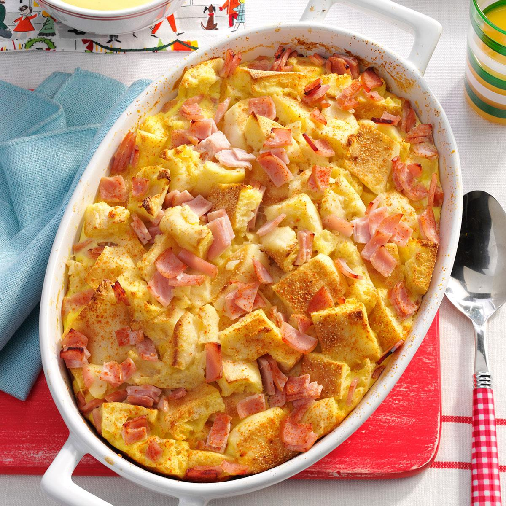

Overnight Eggs Benedict! Easy to make ahead, perfect for brunch or a special occasion or overnight house guests.
Ingredientes:
- Cooking spray
- 8 large eggs
- 2 cups milk
- 3 green onions, chopped
- 1 teaspoon onion powder
- 1 teaspoon salt
- ¾ pound Canadian bacon, cut into 1/2-inch dice
- 6 English muffins, cut into 1/2-inch dice
- ½ teaspoon paprika
- 1 (.9 ounce) package hollandaise sauce mix
- 1 cup milk
- 1 cup milk
Directions:
- Step 1
- Spray 9x13-inch baking dish with cooking spray.
- Step 2
- Whisk eggs, 2 cups milk, green onions, onion powder, and salt together in a large bowl until well mixed.
- Step 3
- Layer half the Canadian bacon in the prepared baking dish.
- Spread English muffins over meat and top with remaining Canadian bacon.
- Pour egg mixture over casserole.
- Cover baking dish with plastic wrap and refrigerate overnight.
- Step 4
- Preheat the oven to 375 degrees F (190 degrees C).
- Step 5
- Sprinkle casserole with paprika; cover with aluminum foil.
- Step 6
- Bake in preheated oven until eggs are nearly set, about 30 minutes; remove foil.
- Continue baking until eggs are completely set, about 15 more minutes.
- Step 7
- Whisk hollandaise sauce mix with 1 cup milk in a saucepan.
- Add margarine and bring to a boil, stirring frequently.
- Reduce heat to medium-low, simmer, and stir until thickened, about 1 minute.
- Drizzle sauce over casserole to serve.
- Step 8
- Enjoy your meal!!!
Return to top
Return to main page